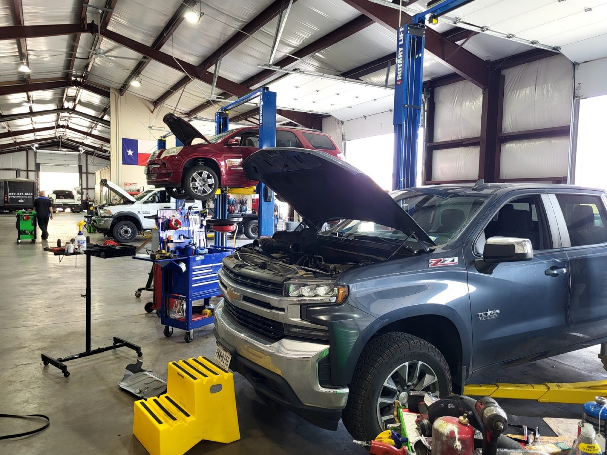

Bay 1
Tires and alignment
Spicewood's tire shop: friendly advisors help you pick tires for your vehicle, driving and budget, then mount, balance and align them.
- New tires
- Mount and balance
- Wheel alignment
Auto repair and tires · Hwy 71, Spicewood
Tires, alignments, brakes and engine work on Highway 71, with a local shuttle.

Local shuttle service
Tires, engine, electrical, brakes and cooling for cars and trucks from Spicewood, Lakeway and Bee Cave.
Spicewood's tire shop: friendly advisors help you pick tires for your vehicle, driving and budget, then mount, balance and align them.
Engine diagnostics and timing service for all makes and models.
Batteries and electrical problems tracked down, from a warning alert on the dash to a car that won't start.
Brake service for cars and trucks.
Radiator and cooling system work to keep the engine running cool through a Texas summer.
Oil changes and everyday maintenance, plus trailer hitch installs, even on short notice.


What drivers say
4.7210 Google reviewsWe are so lucky to have these fine folks here in Spicewood! They really impressed me with their personalized service. They're the easiest dealing auto repair shop I've ever had the pleasure of working with. My truck is now driving better than it ever has. The tires and alignment are perfect!
We are fortunate to have great auto shops in the area, but V-Bay truly exceeded my expectations. Their rates were very competitive, and the customer service was outstanding from start to finish. The complimentary ride to and from work made a huge difference while my car was being serviced. I’ll definitely be returning for future needs and highly recommend them to others.
They installed a trailer hitch on my car on short notice. Got me in quickly as I was moving out of town to another state. Recommended that I use a Toyota wiring harness not generic because that did not always hold up over time. Very great staff in the office. If I were there I would use them servicing my car. Ty guys.
Had a great experience with Vineyard Bay Automotive! The truck gave me a warning alert and I was close by so stopped in. They saw to my needs quickly! Everyone I dealt with was very agreeable and kind. I felt they were trustworthy, honest and fair in their pricing. I recommend!
An independent repair and tire shop, open Monday to Friday. Also known as V-Bay. We serve Travis and Burnet Counties.
Friendly staff, quick turnaround and fair prices. Short-notice jobs are welcome.
Our work carries a 2 year, 24,000 mile warranty. We offer a local shuttle and financing.

Find us
22111 State Hwy 71, Spicewood, TX 78669
Closed Saturday and Sunday. Ask about the local shuttle when you drop off.